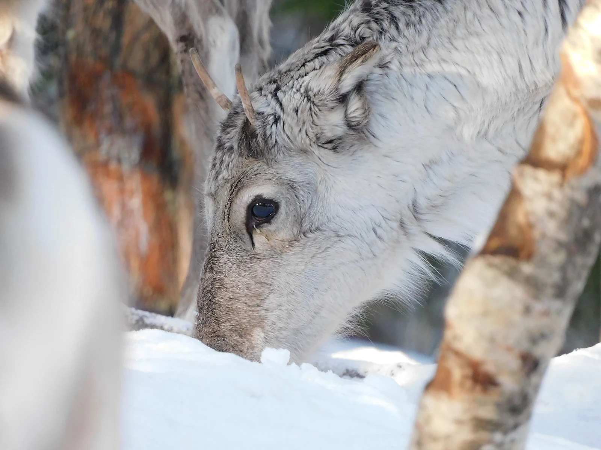

Tierfotografie mit der Nikon Coolpix B600 — Tiere ganz nah erleben

Tiere zu fotografieren finde ich spannend, weil man nie genau weiss, was als Nächstes passiert. Manchmal muss man geduldig warten, bis sich ein Tier bewegt oder in die richtige Richtung schaut. Mit meiner Nikon Coolpix B600 kann ich solche Momente festhalten, auch wenn das Tier etwas weiter entfernt ist.
Ganz nah, ohne näher zu gehen
Das Besondere an der Nikon Coolpix B600 ist ihr grosser Zoom. Sie hat einen 60-fachen optischen Zoom. Damit kann ich Tiere fotografieren, die ich mit blossem Auge nur aus der Distanz sehe.
Das ist besonders praktisch bei Vögeln oder anderen scheuen Tieren. Ich kann sie fotografieren, ohne ihnen zu nahe zu kommen und sie zu stören.
Geduld gehört dazu
Bei der Tierfotografie braucht man manchmal viel Geduld. Tiere bewegen sich oft genau dann, wenn man es nicht erwartet. Deshalb versuche ich, die Kamera bereit zu halten und den richtigen Moment nicht zu verpassen.
Besonders wichtig ist auch, die Kamera möglichst ruhig zu halten. Wenn ich stark zoome, können schon kleine Bewegungen das Bild verwackeln.
Was ich mit der Kamera ausprobieren möchte
Ich möchte verschiedene Tiere aus unterschiedlichen Entfernungen fotografieren und sehen, wie viele Details ich mit dem Zoom einfangen kann. Besonders spannend finde ich es, wenn man auf einem Foto kleine Dinge entdeckt, die man aus der Entfernung kaum erkennen konnte.
Dabei möchte ich auch lernen, wie Licht, Hintergrund und der richtige Moment das Bild verändern.
Mein Fazit
Mit der Nikon Coolpix B600 kann ich in der Tierfotografie vieles ausprobieren. Der grosse Zoom hilft mir, Tiere aus der Distanz aufzunehmen und besondere Momente festzuhalten.
Für mich geht es nicht nur darum, ein Tier möglichst gross auf dem Bild zu haben. Ich möchte auch schöne Momente einfangen und zeigen, wie faszinierend Tiere sein können.
Manchmal braucht es einfach etwas Geduld, den richtigen Moment und eine Kamera, die einem neue Perspektiven ermöglicht.